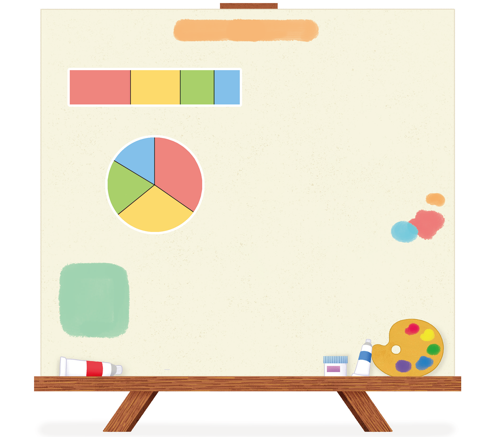

확인하고 정리해요
공부한 내용을 확인해요
안에 알맞은 말이나 수를 써넣으세요.
띠 그래프와 원그래프로 알아보기
좋아하는 색깔별 학생 수의 비율
빨간색
(35 ％)
빨간색
(35 ％)
노란색
(30 ％)
노란색
(30 ％)
초록색
(20 ％)
초록색
(20 ％)
파란색
(15 ％)
파란색
(15 ％)
좋아하는 색깔별 학생 수의 비율
띠그래프와
원그래프로
나타내기
1
각 항목의 백분율 구하기
3
각 항목의 백분율만큼 선을 그어 띠(원) 나누기
4
나눈 부분에 각 항목의 내용과 백분을 쓰기
5
그래프에 알맞은 제목 쓰기
2
각 항목의 백분율의 합계가
％인지 확인하기

・비율이 가장 높은 색깔은
입니다.
・비율이 가장 낮은 색깔은
입니다.
・노란색을 좋아하는 학생의 수는 전체의
％
입니다.
입력타입토글
리셋
확인